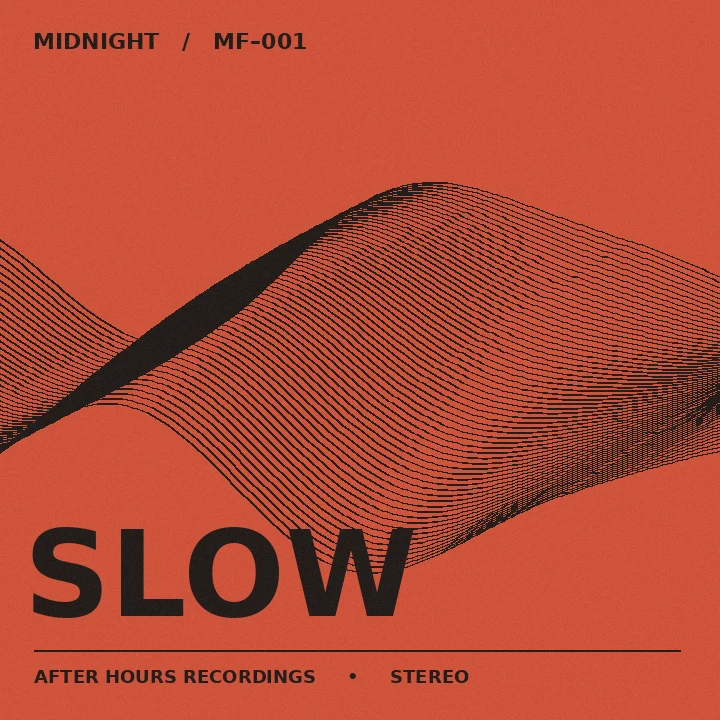

▂▅█▃▆
Midnight Frequencies
AFTER-HOURS MUSIC RADIO
♩
Enable beat
SIDE A / INTRO
120 BPM
/
STEREO
01 / CUE THE RECORD
Midnight
Frequencies.
One record. Five moves from the groove to the master.
MONITOR OUTPUT / STEREO
▶ Play session
Enter the studio →
↓ SCROLL TO MIX
⌖
MF / 01
SLEEVE NOTES
Graduation
Kanye West
SIDE B / LISTENING ROOM
◎ Listener

Low Orbit
Midnight Frequencies
❮
▶
❯
0:00
0:00
VOL